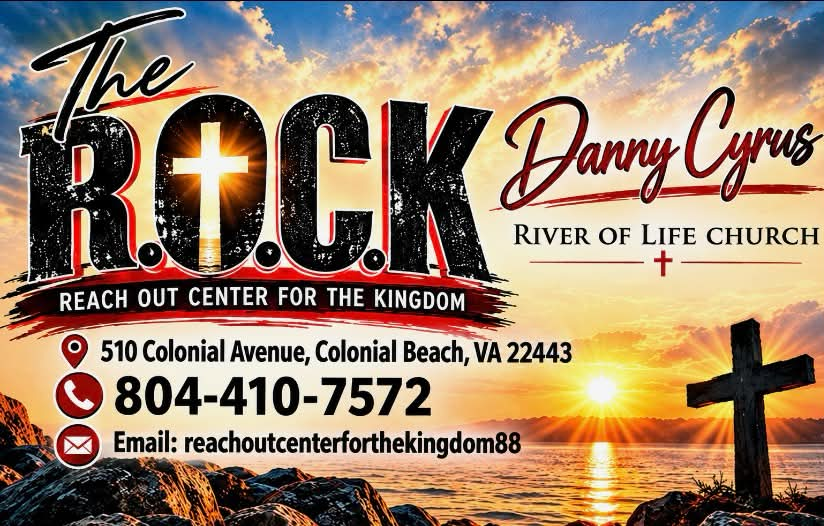
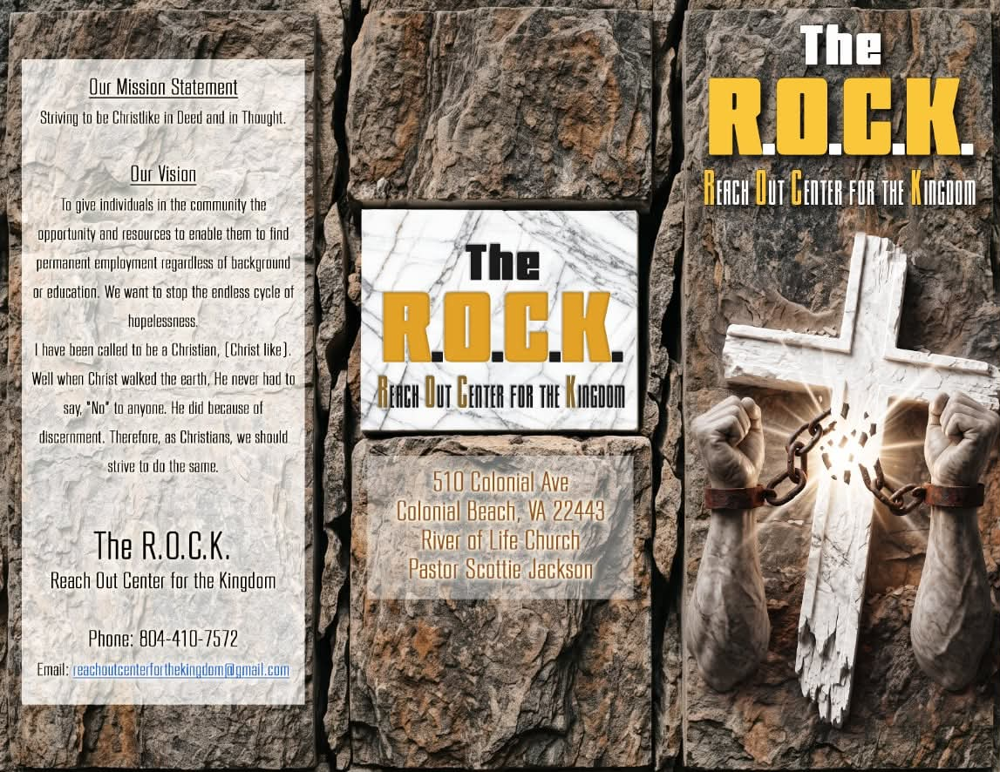

Open a path to work
Give people in the community the opportunity, resources, and practical support to pursue permanent employment—regardless of background or education.
A faith-rooted vision to meet people with practical support, meaningful work, and the chance to move beyond the cycle of hopelessness.

“All things work together for good…” Romans 8:28
Years since a prison cell became the birthplace of a vision.
More than 35 years ago, Danny Cyrus went to prison for something he says he did not do. He held tightly to Romans 8:28 and kept looking for the “good” that could come from that chapter of his life.
He spent his time in prayer, in the Word, and largely to himself. While reading about Jerusalem—and reflecting on what the capital of a nation ought to represent—he began praying for restoration in the streets and communities of this country.
Inside prison, men had to hold a job to keep their good time. That reality sharpened the vision: people need a real path to productive work, not another turn through hopelessness.
The work is built around dignity, discernment, and a second chance that leads somewhere lasting.
Give people in the community the opportunity, resources, and practical support to pursue permanent employment—regardless of background or education.
Build confidence, self-assurance, and usable skills so that a setback does not become a lifetime sentence of instability and hopelessness.
Show the love of Christ in practical ways: teaching, encouragement, accountability, and help that restores people to healthy participation in the community.
The early vision appeared as a newspaper heading: “The R.O.C.K. Cuts”—the Reach Out Center for the Kingdom Cleans Up The Streets.

Early vision artwork for the Reach Out Center for the Kingdom.
The R.O.C.K. starts from a simple conviction: no one is beyond restoration. Freedom becomes visible when people are equipped to live, work, and contribute with dignity.
“If the Son makes you free, you shall be free indeed.” — John 8:36
A profitable business built around skilled work and the belief that service can carry purpose into the everyday.
People willing to learn can develop professional skills, productive habits, and a stronger path toward permanent employment.
The business vision is designed to help fund The R.O.C.K. and extend practical restoration to more people.
Support can take many forms. Contact The R.O.C.K. to talk about where your time, resources, materials, or prayers can make the greatest difference.